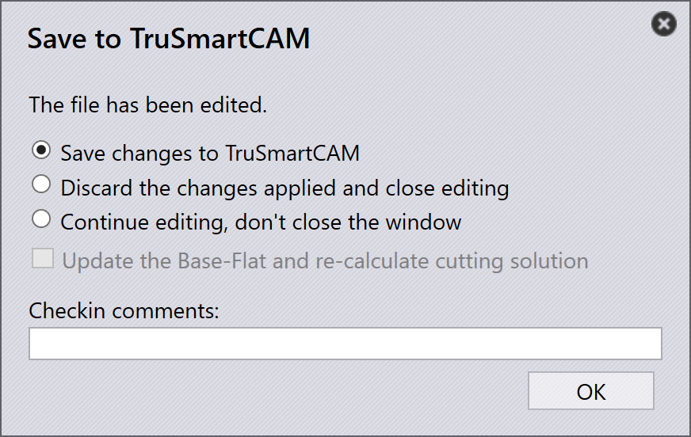

แผง tooling
ส่วนนี้อธิบายการดำเนินการที่เกี่ยวข้องกับ tooling เช่น Export outputs, Check Tooling, Suppress Tooling, Set as Base-Flat…, Copy Tooling และตัวเลือกอื่น ๆ ที่ใช้จัดการอินสแทนซ์ของ tooling

|
|
Export Outputs
ตัวเลือกนี้จะส่งออกเอาต์พุตของชิ้นงานไปยังปลายทางที่กำหนดไว้ใน Factory Settings (ดู Bend Settings และ Cut Settings)
จะส่งออกเฉพาะ tooling ที่เกี่ยวข้องกับการทำ tooling ที่เลือกเท่านั้น ไม่ใช่ทั้งชิ้น
| ไฟล์ที่ส่งออกขึ้นอยู่กับประเภทการทำงาน สำหรับการดัดและ การพับ จะสร้างไฟล์ NC และรายงาน สำหรับการตัดและการเจาะ จะส่งออกเฉพาะไฟล์ชิ้นงานเท่านั้น |
Check Tooling
-
หากมีการเปลี่ยนแปลงในการตั้งค่า CAM หรือเครื่องมือดัดหายไป คุณไม่จำเป็น ต้อง Re-tool ชิ้นงาน
-
ให้ใช้ Check Tooling เพื่อตรวจสอบ tooling ที่มีอยู่โดยไม่เปลี่ยนแปลงใด ๆ แทน
-
หากการตรวจสอบไม่ผ่าน สถานะ tooling ของอินสแทนซ์นั้นจะถูกอัปเดต และ ไฟล์เอาต์พุตที่เกี่ยวข้องจะถูกลบ
-
Check Tooling ยังตรวจจับชิ้นงานที่เคยมีการแทนที่ข้อผิดพลาดด้วยตนเองโดยใช้ Ignore Errors และอัปเดตสถานะเป็นข้อผิดพลาดหากจำเป็น
Copy tooling
copy tooling ช่วยให้คุณนำเอา tooling การดัดจากโซลูชันหนึ่งไปใช้กับ โซลูชันอื่น ๆ ได้อย่างรวดเร็ว ช่วยประหยัดเวลาและความพยายาม
การดำเนินการนี้จะคัดลอกการตั้งค่า punch ลำดับ และ back gauge จาก tooling (โซลูชัน) อ้างอิงที่เลือก และพยายามนำการตั้งค่าเดียวกันไปใช้กับโซลูชันอื่น ๆ ทั้งหมด
-
หากการตั้งค่าที่คัดลอกมาเป็นไปได้สำหรับเครื่องจักรเป้าหมาย ระบบจะบันทึกและนำไปใช้
-
หากการตั้งค่าเป็นไปไม่ได้ tooling เดิมของเครื่องจักรนั้นจะคงเดิมไว้
ตัวอย่างเช่น คุณอาจมี tooling ที่แตกต่างกันสำหรับแต่ละเครื่องจักร:
-
ในที่นี้ เครื่องจักร 5230X 4A ใช้ punch แบบ Gooseneck ส่วนเครื่องจักร 5230SX 6A ใช้ punch แบบ Pointed

เมื่อคุณใช้ Copy Tooling… บนเครื่องจักร 5230X 4A ระบบจะ พยายามคัดลอกการตั้งค่า Gooseneck ไปยังเครื่องจักรอื่น ๆ ทั้งหมด

การตั้งค่า punch ลำดับ และ back gauge เดียวกันจะถูกนำไปใช้ทุกที่ที่ เป็นไปได้ หากไม่สามารถใช้การตั้งค่าที่คัดลอกมาได้ tooling เดิมจะคงไว้ไม่เปลี่ยนแปลง

หลังจากใช้ copy tooling แล้ว การตั้งค่า Gooseneck จะถูกนำไปใช้กับ เครื่องจักรอื่น ๆ ทั้งหมดที่เป็นไปได้สำเร็จ
Set as Base-Flat…
คุณสมบัติ Set as Base-Flat… กำหนดว่า tooling การดัดหรือการพับใด จะถูกใช้เป็นขนาดแผ่คลี่อ้างอิงสำหรับการสร้างโซลูชันการตัด เมื่อ tooling ถูกกำหนดเป็น Base-Flat แล้ว TruSmartCAM จะอัปเดตขนาดแผ่คลี่ ของชิ้นงานตามเครื่องจักรนั้น และสร้างโซลูชันการตัดขึ้นใหม่ตามนั้น โดย tooling ที่เป็น Base-Flat จะแสดงด้วยเส้นขอบสีน้ำเงินใน UI
เครื่องจักรดัดแต่ละเครื่องอาจให้ขนาดแผ่คลี่ที่แตกต่างกันเล็กน้อยสำหรับชิ้นงานเดียวกัน เมื่อคุณกำหนด tooling เป็น Base-Flat TruSmartCAM จะใช้ขนาดแผ่คลี่ของเครื่องจักรนั้น เป็นการอ้างอิงหลัก และคำนวณโซลูชันการตัดใหม่โดยอัตโนมัติ
ในที่นี้ เราสามารถเห็นขนาดแผ่คลี่ที่แตกต่างกันสำหรับชิ้นงานเดียวกันในแต่ละ เครื่องจักร:

ในตัวอย่างนี้ tooling 5230X 4A ถูกกำหนดเป็น Base-Flat และ ขนาดแผ่คลี่ที่อัปเดตจะถูกนำไปใช้ในคุณสมบัติชิ้นงาน:

Automatic base flat selection
เมื่อเปิดใช้งานการตั้งค่าโรงงาน Apply flat correction during bending:

-
TruSmartCAM จะกำหนด tooling การดัด (ที่มีตารางความยาวการดัดสูงสุด) เป็น Base-Flat โดยอัตโนมัติระหว่างการนำเข้าชิ้นงาน
-
หาก tooling การดัดที่เลือกเกิดข้อผิดพลาดหรือเป็นไปไม่ได้ TruSmartCAM จะสลับไปใช้และกำหนด tooling การดัดที่ถูกต้องอื่นเป็น Base-Flat อย่างชาญฉลาด สิ่งนี้ช่วยให้ขนาดแผ่คลี่อ้างอิงและโซลูชันการตัดคงสอดคล้องและถูกต้องเสมอ โดยไม่ต้องดำเนินการด้วยตนเอง
Enhanced base flat management
TruSmartCAM มีตัวเลือก Base-Flat ในกล่องโต้ตอบ Save to Praxis เมื่อบันทึกการแก้ไข tooling การดัดหรือการพับ ตัวเลือกเหล่านี้จะปรากฏ เฉพาะ tooling ที่อยู่ในสถานะ OK เท่านั้น และช่วยให้มั่นใจว่าขนาดแผ่คลี่และโซลูชันการตัด ถูกต้องเสมอ
Set as Base-Flat and calculate cutting solution
ตัวเลือกนี้ใช้เพื่อกำหนด tooling เป็น Base-Flat เป็นครั้งแรก และ สร้างโซลูชันการตัดที่สอดคล้องโดยอัตโนมัติ
จะปรากฏเมื่อ:
-
tooling ยังไม่ได้ถูกกำหนดเป็น Base-Flat ในขณะนี้
-
ผู้ใช้เช็คเอาต์ tooling เพื่อแก้ไขและกำลังบันทึกการเปลี่ยนแปลง

หากต้องการใช้ตัวเลือกนี้ ให้เช็คเอาต์ tooling การดัดหรือการพับ และทำ การแก้ไขที่จำเป็น เช่น เปลี่ยนแปลงพารามิเตอร์การดัดหรือขนาดแผ่คลี่ กด Ctrl+S เพื่อบันทึกการเปลี่ยนแปลง ในกล่องโต้ตอบ Save to Praxis เลือก Set as Base-Flat and calculate cutting solution และ คลิก OK TruSmartCAM จะกำหนด tooling เป็น Base-Flat และสร้าง โซลูชันการตัดโดยใช้ขนาดแผ่คลี่ที่อัปเดต
Update the base-flat and re-calculate cutting solution
ตัวเลือกนี้ใช้เมื่อ tooling ถูกกำหนดเป็น Base-Flat อยู่แล้วและถูกแก้ไข จึงต้องสร้างขนาดแผ่คลี่และโซลูชันการตัดใหม่
จะปรากฏเมื่อ:
-
tooling ถูกกำหนดเป็น Base-Flat อยู่แล้ว
-
ผู้ใช้เช็คเอาต์ แก้ไข และกำลังบันทึกการเปลี่ยนแปลง

เมื่อแก้ไข tooling Base-Flat ที่มีอยู่ ให้อัปเดตพารามิเตอร์การดัดหรือ เรขาคณิตขนาดแผ่คลี่ตามที่จำเป็น ในกล่องโต้ตอบ Save to Praxis เลือก Update the base-flat and re-calculate cutting solution จากนั้น TruSmartCAM จะอัปเดต tooling Base-Flat และสร้างโซลูชันการตัด ที่เกี่ยวข้องทั้งหมดใหม่เพื่อสะท้อนการเปลี่ยนแปลงล่าสุด
|
สามารถกำหนด tooling การดัดเป็น Base-Flat ได้เพียงครั้งละหนึ่ง tooling เท่านั้น เมื่อมีการเปลี่ยน Base-Flat โซลูชันการตัดที่มีอยู่จะถูกประมวลผลใหม่โดยอัตโนมัติ คุณสมบัตินี้ใช้ได้กับทั้ง tooling การดัดและการพับภายใน TruSmartCAM |
Re-tool
ตัวเลือกนี้จะประมวลผล tooling ที่เลือกของชิ้นงานใหม่
คลิกขวาที่ tooling ที่ต้องการในแผง Tooling และคลิก Re-tool…
กล่องโต้ตอบยืนยันจะแสดงขึ้นก่อนดำเนินการต่อ

คลิก Yes เพื่อดำเนินการ Re-tool ต่อ หรือ No เพื่อ ยกเลิกการดำเนินการ
จะ Re-tool เฉพาะ tooling ที่เลือกเท่านั้น tooling อื่น ๆ ที่เกี่ยวข้องกับ ชิ้นงานจะไม่ได้รับผลกระทบ เอาต์พุตที่มีอยู่ซึ่งเกี่ยวข้องกับ tooling ที่เลือกจะถูก ลบและสร้างใหม่ระหว่างการ Re-tool
ใช้ตัวเลือกนี้เมื่อข้อมูล tooling ล้าสมัย ไม่ถูกต้อง หรือเมื่อมี การเปลี่ยนแปลงการกำหนดค่าเครื่องจักรหรือ tooling
Ignore errors
-
หากอินสแทนซ์ที่ทำ tooling แสดงคำเตือน แต่คุณยังต้องการดำเนินการต่อ คุณสามารถข้ามคำเตือนได้โดยคลิก Ignore errors
-
การทำเช่นนี้จะอนุญาตให้ระบบส่งออกไฟล์เอาต์พุตสำหรับอินสแทนซ์นั้น แม้จะมีปัญหา tooling ก็ตาม
| ใช้ Ignore Errors เฉพาะเมื่อคุณแน่ใจว่าสามารถข้ามคำเตือนได้ อย่างปลอดภัย การข้ามข้อผิดพลาดที่แท้จริงอาจทำให้เครื่องจักรเสียหายหรือเกิดความเสี่ยงด้านความปลอดภัย |
ระงับ/ยกเลิกการระงับ tooling
-
เมื่อเครื่องจักรไม่ทำงาน หรือคุณไม่ต้องการให้ชิ้นงานใดชิ้นหนึ่งถูก ประมวลผลโดยเครื่องจักรเฉพาะ ให้ใช้ Suppress Tooling เพื่อยกเว้น ชิ้นงานนั้นจากการทำ nesting บนเครื่องจักรนั้น
-
หลังจากระงับแล้ว เมื่อชี้เมาส์ไปที่อินสแทนซ์ที่ทำ tooling จะแสดง ข้อความ เช่น: “Tooling suppressed by <User name> on <Date Time>”
-
Suppress tooling จะลบไฟล์เอาต์พุตสำหรับเครื่องจักรและชิ้นงานนั้น
-
ใช้ Unsuppress tooling เพื่อคืนค่าสถานะ tooling ของชิ้นงานบนเครื่องจักรนั้น
-
เมื่อยกเลิกการระงับ ไฟล์เอาต์พุตที่เกี่ยวข้องจะถูกสร้างขึ้นอีกครั้ง